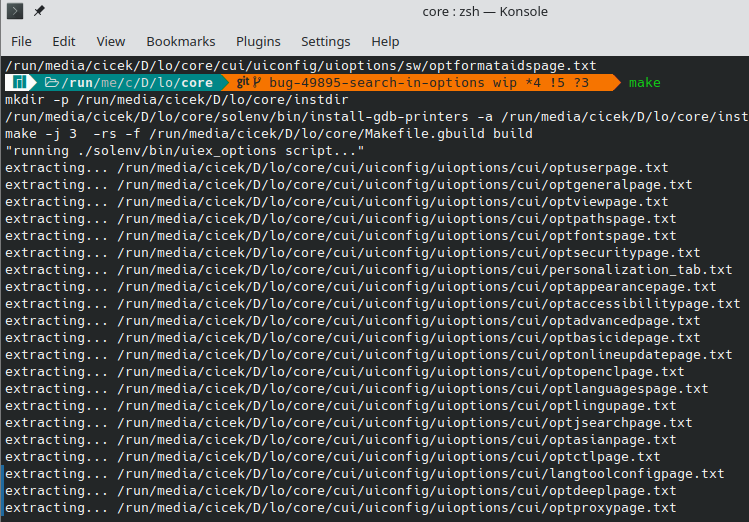
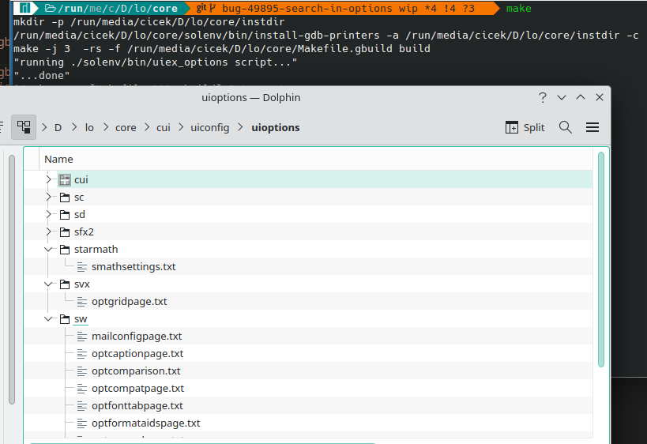
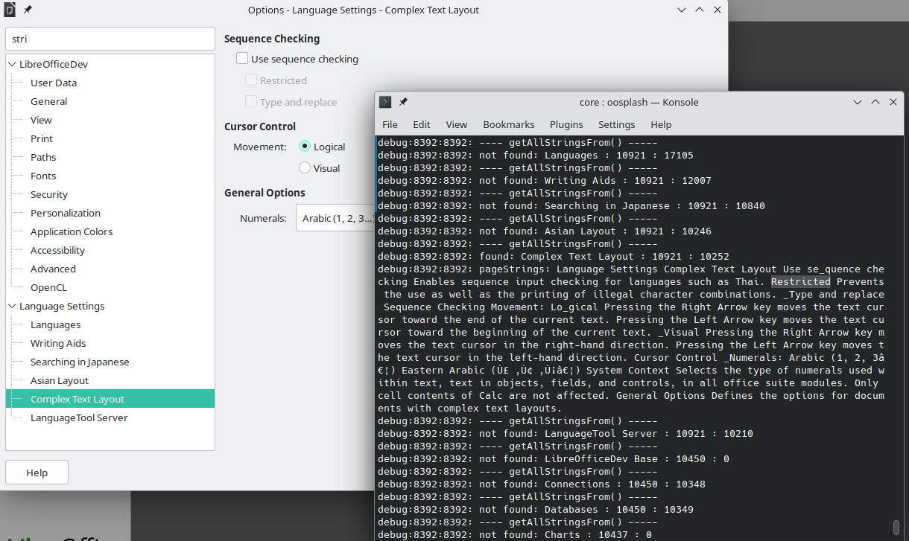

Week #4 - GSoC 2023 Weekly Report - Search Field in Options
Thanks to my ‘Search Field in Options’ project mentors Andreas Heinisch and Heiko Tietze for their time and guidance. Additionally, thanks to Caolán McNamara for giving me the ‘generating ui strings at build-time’ idea.
Project Report for Week #4
-
New patchset submitted: https://gerrit.libreoffice.org/c/core/+/152519/4
-
Added new python script to generate ui strings
I added new python script called ./solenv/bin/uiex_options to extract strings(labels, accessible-names, accessible-descriptions and tooltip-texts) from ui files. This script is almost the same with ./solenv/bin/uiex. The only difference is the new script extracts only entry.msgid which contains the strings we need. Any other outputs like entry.msgctxt is not needed so I kept only entry.msgid in the new script.
For example ./solenv/bin/uiex script:
$ ./solenv/bin/uiex -i ./cui/uiconfig/ui/optopenclpage.ui -o output.txt
will extract:
#. QYxCN
#: ../cui/uiconfig/ui/optopenclpage.ui:24
msgctxt "optopenclpage|useopencl"
msgid "Allow use of OpenCL"
msgstr ""
#. MAc4P
#: ../cui/uiconfig/ui/optopenclpage.ui:41
msgctxt "optopenclpage|openclused"
msgid "OpenCL is available for use."
msgstr ""
#. fAEQH
#: ../cui/uiconfig/ui/optopenclpage.ui:53
msgctxt "optopenclpage|openclnotused"
msgid "OpenCL is not used."
msgstr ""
#. xWE5i
#: ../cui/uiconfig/ui/optopenclpage.ui:67
msgctxt "optopenclpage|label1"
msgid "OpenCL Options"
msgstr ""But we only need strings inside msgid here. Others are not needed.
./solenv/bin/uiex_options extracts only strings inside msgid:
$ ./solenv/bin/uiex_options -i ./cui/uiconfig/ui/optopenclpage.ui -o output.txt
will extract:
Allow use of OpenCL OpenCL is available for use. OpenCL is not used. OpenCL Options
- Extraction at build-time
Added all ui files that belong to Options dialog, inside cui/UIConfig_cui.mk file:
$(eval $(call gb_UIConfig_generate_options_uifiles,cui/uiconfig/uioptions, \
cui/uiconfig/ui/optuserpage \
cui/uiconfig/ui/optgeneralpage \
cui/uiconfig/ui/optviewpage \
cui/uiconfig/ui/optpathspage \
cui/uiconfig/ui/optfontspage \
cui/uiconfig/ui/optsecuritypage \
cui/uiconfig/ui/personalization_tab \
cui/uiconfig/ui/optappearancepage \
cui/uiconfig/ui/optaccessibilitypage \
cui/uiconfig/ui/optadvancedpage \
cui/uiconfig/ui/optbasicidepage \
cui/uiconfig/ui/optonlineupdatepage \
cui/uiconfig/ui/optopenclpage \
cui/uiconfig/ui/optlanguagespage \
cui/uiconfig/ui/optlingupage \
cui/uiconfig/ui/optjsearchpage \
cui/uiconfig/ui/optasianpage \
cui/uiconfig/ui/optctlpage \
cui/uiconfig/ui/langtoolconfigpage \
cui/uiconfig/ui/optdeeplpage \
cui/uiconfig/ui/optproxypage \
cui/uiconfig/ui/optemailpage \
cui/uiconfig/ui/optsavepage \
cui/uiconfig/ui/optfltrpage \
cui/uiconfig/ui/optfltrembedpage \
cui/uiconfig/ui/opthtmlpage \
cui/uiconfig/ui/optchartcolorspage \
cui/uiconfig/ui/connpooloptions \
cui/uiconfig/ui/dbregisterpage \
cui/uiconfig/ui/areatabpage \
sw/uiconfig/swriter/ui/optgeneralpage \
sw/uiconfig/swriter/ui/viewoptionspage \
sw/uiconfig/swriter/ui/optformataidspage \
sw/uiconfig/swriter/ui/optfonttabpage \
sw/uiconfig/swriter/ui/printoptionspage \
sw/uiconfig/swriter/ui/opttablepage \
sw/uiconfig/swriter/ui/optredlinepage \
sw/uiconfig/swriter/ui/optcomparison \
sw/uiconfig/swriter/ui/optcompatpage \
sw/uiconfig/swriter/ui/optcaptionpage \
sw/uiconfig/swriter/ui/mailconfigpage \
sc/uiconfig/scalc/ui/scgeneralpage \
sc/uiconfig/scalc/ui/optdefaultpage \
sc/uiconfig/scalc/ui/tpviewpage \
sc/uiconfig/scalc/ui/optcalculatepage \
sc/uiconfig/scalc/ui/optformula \
sc/uiconfig/scalc/ui/optsortlists \
sc/uiconfig/scalc/ui/optchangespage \
sc/uiconfig/scalc/ui/optcompatibilitypage \
sc/uiconfig/scalc/ui/optdlg \
sd/uiconfig/simpress/ui/optimpressgeneralpage \
sd/uiconfig/simpress/ui/sdviewpage \
sd/uiconfig/simpress/ui/prntopts \
svx/uiconfig/ui/optgridpage \
sfx2/uiconfig/ui/optprintpage \
starmath/uiconfig/smath/ui/smathsettings \
))this calls gb_UIConfig_generate_options_uifiles function with cui/uiconfig/uioptions as first parameter and list of ui files as second parameter.
solenv/gbuild/UIConfig.mk:
define gb_UIConfig_run_uiex_options_script
$(shell $(SRCDIR)/solenv/bin/uiex_options -i $(SRCDIR)/$(2).ui -o $(1)/$(3).txt)
$(info extracting... $(1)/$(3).txt)
endef
define gb_UIConfig_handle_uiex_options_script
$(call gb_UIConfig_run_uiex_options_script,$(SRCDIR)/$(1)/$(firstword $(subst /, ,$(2))),$(2),$(notdir $(2)))
endef
define gb_UIConfig_generate_options_uifiles
$(info running ./solenv/bin/uiex_options script...)
$(foreach uifile,$(2),$(call gb_UIConfig_handle_uiex_options_script,$(1),$(uifile)))
$(info ...extraction done.)
endef- Extracted file location
All extracted files located in cui/uiconfig/uioptions/*.
cui/uiconfig/uioptions/cui/* for ui files in ./cui/uiconfig/ui/*.ui
cui/uiconfig/uioptions/sc/* for ui files in ./sc/uiconfig/scalc/ui/*.ui
cui/uiconfig/uioptions/sd/* for ui files in ./sd/uiconfig/simpress/ui/*.ui
cui/uiconfig/uioptions/sfx2/* for ui files in ./sfx2/uiconfig/ui/*.ui
cui/uiconfig/uioptions/starmath/* for ui files in ./starmath/uiconfig/smath/ui/*.ui
cui/uiconfig/uioptions/svx/* for ui files in ./svx/uiconfig/ui/*.ui
cui/uiconfig/uioptions/sw/* for ui files in ./sw/uiconfig/ui/*.ui
and all of sub-directories contain a README.md file.
e.g. cui/uiconfig/uioptions/sfx2/README.md:
This directory contains txt files that extracted form build-time. All files contains labels, accessible-names, accessible-descriptions and tooltip-texts from all ./sfx2/uiconfig/ui/*.ui files that exist in Tools-Options dialog. All .txt file names is the same as their .ui names. e.g.: optprintpage.txt has strings from ./sfx2/uiconfig/ui/optprintpage.ui
- Created new class to fetch the extracted strings and use them in searching.
struct OptionsPageIdInfo;
...
// class TreeOptHelper -----------------------------------------------
class TreeOptHelper
{
public:
TreeOptHelper();
~TreeOptHelper();
void storeStringsFromUiFile(sal_uInt16 nPageId);
OUString getAllStringsFrom(sal_uInt16 nPageId);
};Vector std::vector< OptionsPageIdInfo* > m_aTreePageIds contains all informatin related to extracted strings.
m_aTreePageIds.push_back(new OptionsPageIdInfo(sParentName, xTreeLB->get_text(*xEntry), aParentId, pPageInfo->m_nPageId));
struct OptionsPageIdInfo
{
OUString m_sParentName;
OUString m_sPageName;
sal_uInt16 m_nParentId;
sal_uInt16 m_nPageId;
OptionsPageIdInfo( OUString sParentName, OUString sPageName,
sal_uInt16 nParentId, sal_uInt16 nPageId ) :
m_sParentName(std::move( sParentName )),
m_sPageName(std::move( sPageName )),
m_nParentId( nParentId ),
m_nPageId( nPageId ) {}
};- Updated the
applySearchFilter()function
The searching is made only in the variable sPageNameAndStrings. It contains the dialog page name and its strings.
OUString sPageNameAndStrings = sParentName + " " + sPageName + " " + sPageStrings;
Then the searching is made:
// start searching in strings (label, accessible-name, accessible-description, tooltip-text) and all page names
if (!textSearch.SearchForward(sPageNameAndStrings, &aStartPos, &aEndPos)) { ... }
else { ... }applySearchFilter(OUString const& rSearchTerm) function:
int OfaTreeOptionsDialog::applySearchFilter(OUString const& rSearchTerm)
{
// debug ("applySearchFilter(), rSearchTerm text => : " << rSearchTerm);
if (rSearchTerm.isEmpty())
{
clearOptionsDialog();
xTreeLB->clear();
Initialize(m_xFrame);
return 0;
}
m_options.searchString = rSearchTerm;
utl::TextSearch textSearch(m_options);
clearOptionsDialog();
if (xTreeLB->n_children() > 0)
{
xTreeLB->clear();
}
std::vector<sal_uInt16> aFoundIdsVector;
for (std::size_t i = 0; i < m_aTreePageIds.size(); ++i)
{
OUString sParentName = m_aTreePageIds[i]->m_sParentName;
OUString sPageName = m_aTreePageIds[i]->m_sPageName;
sal_uInt16 nParentId = m_aTreePageIds[i]->m_nParentId;
sal_uInt16 nPageId = m_aTreePageIds[i]->m_nPageId;
OUString sPageStrings = pOptionsTreeStrings.getAllStringsFrom(nPageId);
OUString sPageNameAndStrings = sParentName + " " + sPageName + " " + sPageStrings;
sal_Int32 aStartPos = 0;
sal_Int32 aEndPos = sPageStrings.getLength();
// start searching in strings (label, accessible-name, accessible-description, tooltip-text) and all page names
if (!textSearch.SearchForward(sPageNameAndStrings, &aStartPos, &aEndPos))
{
// debug ("not found: " << sPageName << " : " << nParentId << " : " << nPageId);
}
else
{
// debug ("found: " << sPageName << " : " << nParentId << " : " << nPageId);
// debug ("sPageStrings: " << sPageNameAndStrings);
bool isFound = false;
for (auto aEntryId : aFoundIdsVector)
{
if (aEntryId == nParentId)
{
isFound = true;
}
}
if (!isFound)
{
aFoundIdsVector.push_back(nParentId);
showDialog(nParentId);
}
}
}
// if treeview is empty, return -1
return xTreeLB->n_children() ? 0 : -1;
}- Added new cxx file
cui/source/options/treeopthelper.cxx
This file contains the file path of extracted strings with thair page-id and strings.
struct PageIdToFileNameMap_Impl
{
sal_uInt16 m_nPageId;
const char* m_pPageStringFileName;
std::string m_sContent;
};
// 70 entries
PageIdToFileNameMap_Impl FileMap_Impl[] =
{
// PAGE-ID FILE-PATH-OF-EXTRACTED-STRINGS CONTENT PAGE-NAME UI-FILE-PATH
// ProductName, SID_GENERAL_OPTIONS
{ RID_SFXPAGE_GENERAL, "cui/uiconfig/uioptions/cui/optuserpage.txt", "" }, // UserData ./cui/uiconfig/ui/optuserpage.ui
{ OFA_TP_MISC, "cui/uiconfig/uioptions/cui/optgeneralpage.txt", "" }, // General ./cui/uiconfig/ui/optgeneralpage.ui
... (and other 68 entries)
}The function storeStringsFromUiFile(sal_uInt16 nPageId) reads the data inside txt files and fetch them into PageIdToFileNameMap_Impl struct as rEntry.m_sContent += sLine + " ";
void TreeOptHelper::storeStringsFromUiFile(sal_uInt16 nPageId)
{
for (PageIdToFileNameMap_Impl& rEntry : FileMap_Impl)
{
if (rEntry.m_nPageId == nPageId)
{
std::ifstream rIFStream(rEntry.m_pPageStringFileName);
std::string sTemp;
std::getline(rIFStream, sTemp);
if( rIFStream.eof() || sTemp.empty() )
{
SAL_WARN(""," file: " << rEntry.m_pPageStringFileName << " could not be opened for reading!");
return;
}
if (rEntry.m_sContent.empty())
{
// debug ("fetching data from " << rEntry.m_pPageStringFileName);
while(!rIFStream.eof())
{
std::string sLine(sTemp.data(), sTemp.length());
rEntry.m_sContent += sLine + " ";
getline(rIFStream, sTemp);
}
// debug ("fetching done\n");
break;
}
else
{
// debug ("no data or data is already fetched from : " << rEntry.m_pPageStringFileName);
}
}
}
}The function getAllStringsFrom(sal_uInt16 nPageId) gets the strings from the given pageId:
OUString TreeOptHelper::getAllStringsFrom(sal_uInt16 nPageId)
{
if (nPageId == 0)
return OUString();
for (PageIdToFileNameMap_Impl& rEntry : FileMap_Impl)
{
if (rEntry.m_nPageId == nPageId)
{
return OStringToOUString(rEntry.m_sContent, RTL_TEXTENCODING_ASCII_US);
}
}
return OUString();
}- Some screenshots from the development



Summary
- Strings in ui files are now can be generated at build-time.
- labels, accessible-names, accessible-descriptions and tooltip-texts from all ui files that resides inside Options dialog, are now included in searching.
***
Steps for implementing search functionality in “Tools > Options”:
| 1) Add Search field to “Tools > Options” dialog. | DONE - week #1 | |
| 2) Include Options treeview into searching. | DONE - week #1 | |
| 3) Include Sub-tree elements (child nodes) into searching. | DONE - week #2 | |
| 4) Generate all strings(labels), accessible-names, accessible-descriptions and tooltip-texts of all .ui files in ./cui/* directory, at build-time. | DONE - week #3, #4 (most challenging part) | |
| 5) Fetch the generated data - at run-time. | DONE - week #3, #4 | |
| 6) Include strings(labels), accessible-names, accessible-descriptions and tooltip-texts into searching. | DONE - week #3, #4 | |
| 7) Implement highlighting feature. | next step | |
| ... | ... | |
***
Patch: https://gerrit.libreoffice.org/c/core/+/152519
Project Mentors: Andreas Heinisch and Heiko Tietze (Thanks for their time and guidance)
GSoC project page: https://summerofcode.withgoogle.com/programs/2023/projects/IKtSHIH1
Enhancement request on Bugzilla: https://bugs.documentfoundation.org/show_bug.cgi?id=49895